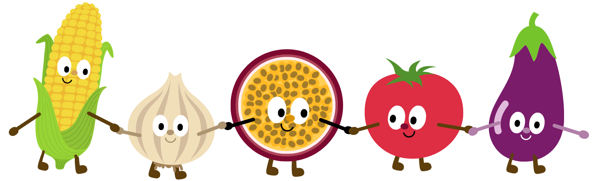
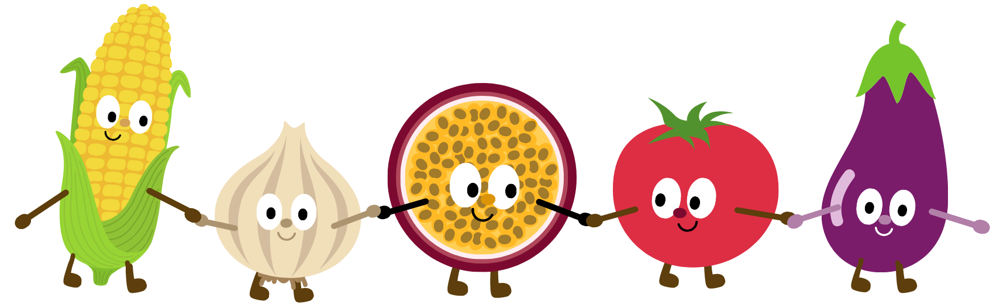

Bitebuddy's app is designed to simplify our culinary experience. It caters to diverse needs, offering recipe ideas based on dietary restrictions and meal types. The app also streamlines our interaction with food events, allowing us to effortlessly add events to our calendar.
Guided Screens for Enhanced Exploration
The website boasts intuitive screens that guide us through our culinary adventure. From the engaging home page to the interactive Google Maps interface, Bitebuddy promises a seamless experience. Popups on the map enhance engagement, providing relevant information at our fingertips. The project also aspires to include a Cookbot page, a potential stretch goal.
Our Fantastic Frontend Team
Bitebuddy's front-end team is the driving force behind the user experience. This devoted team is creating the visual identity and interaction of our website using a combination of creative expertise and technological savvy. The front-end team is methodically creating each piece to create a seamless and delightful user journey, from the welcoming home page that welcomes users to the easy navigation interface. They're converting the brilliant color palette into captivating images, optimizing layouts for multiple devices, and developing flexible designs that adapt nicely to varied screen sizes. The front-end team's dedication to user-centric design means that every click and swipe on Bitebuddy is a treat, balancing aesthetics and functionality to produce a platform that is as aesthetically beautiful as it is easy to use.
 
